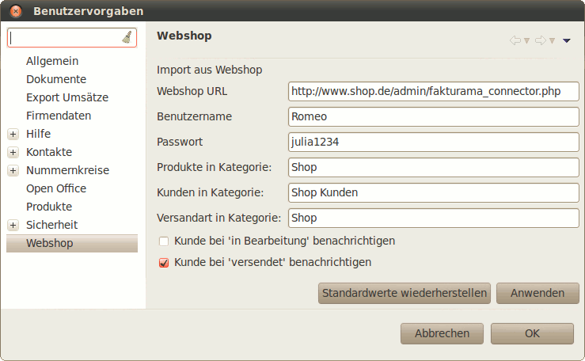

Öffnen Sie die Datei fakturama_connector_settings.php mit einem Texteditor. In der Datei befinden sich einige Einstellungen in folgender Schreibweise:
define ('PARAMETER_NAME','Wert');
Es ist darauf zu achten, nur die Zeichenkette die hier mit Wert markiert ist zu ändern. Diese muss weiterhin durch zwei Hochkommas eingeschlossen bleiben.
Das Shopsystem wird durch den Parameter FAKTURAMA_WEBSHOP gesetzt. Dieser Wert ist in der Regel bereits richtig gesetzt und muss nicht geändert werden. Folgende Werte sind möglich:
define ('FAKTURAMA_WEBSHOP','OSCOMMERCE');
define ('FAKTURAMA_WEBSHOP','XTCOMMERCE');
define ('FAKTURAMA_WEBSHOP','XTCMODIFIED');
Benutzername und Passwort sind nicht identisch mit denen des Shopadministrators. Sie können fast beliebig gewählt werden. Beispiel:
define ('FAKTURAMA_USERNAME', 'Romeo');
define ('FAKTURAMA_PASSWORD', 'julia1234');
Diese beiden Werte sind auch im Programm unter Einstellungen/Webshop zu setzen:
